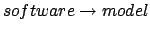

Moreover, in the context of embedded system designs, one could also study extra-functional artifacts -- such as critical paths in the design model which contribute to the maximum execution/response time of the corresponding software implementation. From the model-level performance analysis, we can generate representative critical paths or system scenarios which can be fed to lower-level performance analyzers. Seamlessly integrating model-level and lower-level analyzers to provide timing guarantees will be a challenging issue.
In the longer term, I am studying the possibility of developing bi-directional links between requirements, design models and implementations in the context of embedded system design. Currently, system design focuses on generating design models from requirements, and system implementation from design models. However, as most practitioners will agree, it is often impossible to get a complete set of system requirements at one go. Consequently, it is difficult to generate correct-by-construction designs and implementation at one go. This makes it difficult (or even impossible) to perform all of the validation at the model level and none at the software level. Now, when we perform testing/debugging of the software implementations, if functional errors are found -- it very hard to relate back the error to the model/requirement level. In the longer term, I am thinking of studying the issue of backward association between system implementations and design models. Currently, there exist number of commercial tools for (semi)-automatically generating software implementations from system models specified in the Unified Modeling Language (UML). However, the association between models and code is (mostly) a forward one. There is hardly any mechanism for mapping back the code elements to corresponding model elements. Even for state diagrams (which form the key executable part of UML) many of the model elements cannot be retrieved once C/C++/Java code has been generated. Such backwards communication between software and models can be crucial for communicating changes/fixes in the software to the embedded system designer or even other stakeholders. This is particularly important from a pragmatic point of view since in reality embedded system design (currently) involves lot of low-level optimizations at the implementation level.
So, to effectively support model-driven development of embedded systems for safety-critical applications, we need to seriously build backward links between system implementations and system models. We need to study whether  backward associations can be seamlessly integrated into UML design tools, particularly those which proceed by (forward) transformation of design models to implementations. Clearly, we also need to study the nature of models suitable for such backward associations - whether we take UML state diagrams or richer models [1] with UML-compatible notations. The ability to relate code elements with model elements must also be seamlessly integrated with various code-level debugging methods -- model checking, slicing, fault localization or even performance debugging (using execution-time analysis). Finally, as a more ambitious goal, we can try to relate design models to (informal) requirements -- once the backward association between software and design models is established.